Compositional Methods of Engineering Analysis
James Fairbanks
Department of Mechanical & Aerospace
Engineering, University of Florida
Fall 2026 Department Seminar
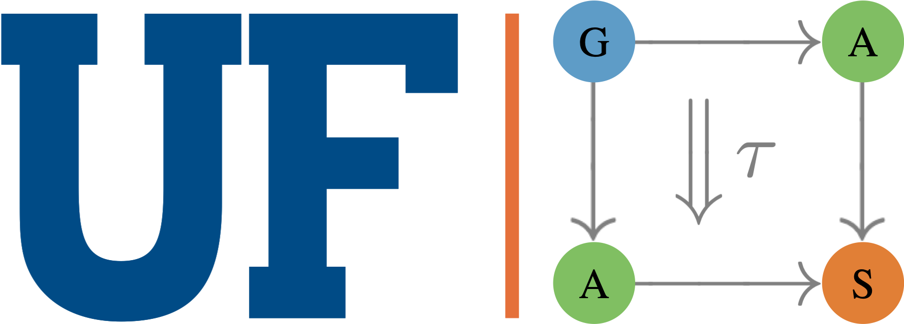
Curriculum Vitae
2
Students, Collaborators, and Family
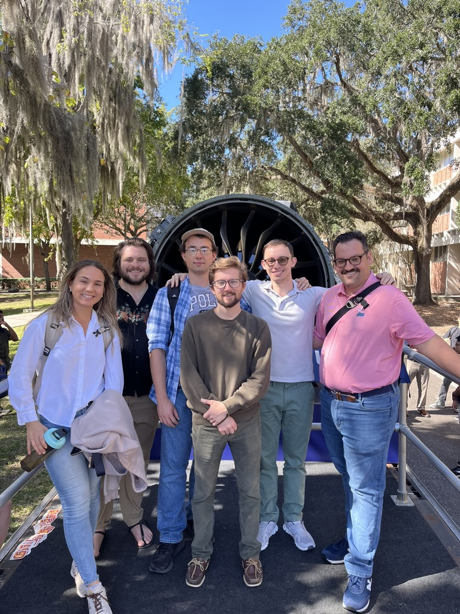
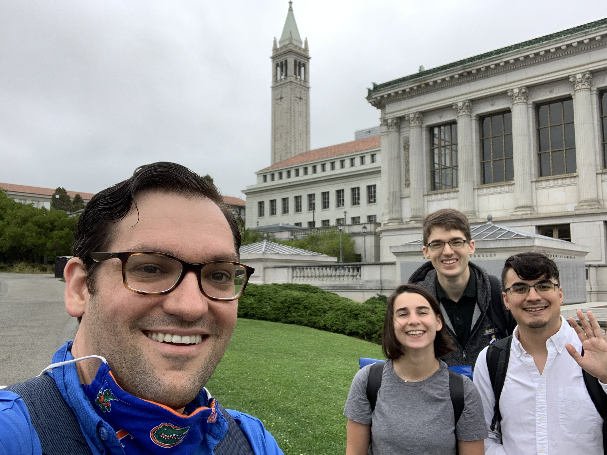
3
The Program at a Glance: DIGICAMS for CODAC
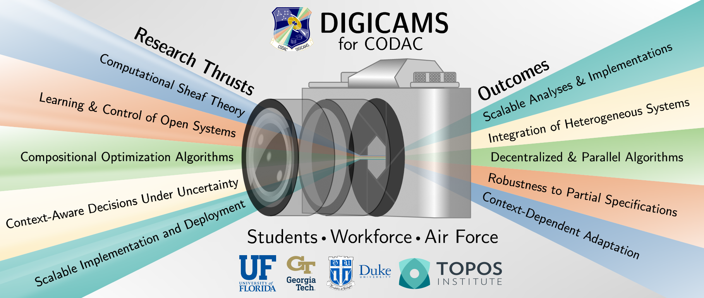
Five interconnected thrusts bridging computational sheaf theory, open systems control, and scalable digital
engineering.
4
A Categorical Architecture for Systems and Control

Category theory provides the functorial bridge connecting how systems are structured to how they behave and
decide.
5
Sheaves Are Fundamental for Complex Systems
Grids, flow fields, robot teams, and colorings share the same underlying structure:
A/B: Domain Decomposition in FEA mesh and in the smooth solutions
C/D: Interacting subsystems in Multiagent Autonomy and the closed loop dynamics
E/F: A Cellular Sheaf Visualized Geometrically and Algebraically
G: A structured decomposition of a graph and its space of 3-colorings
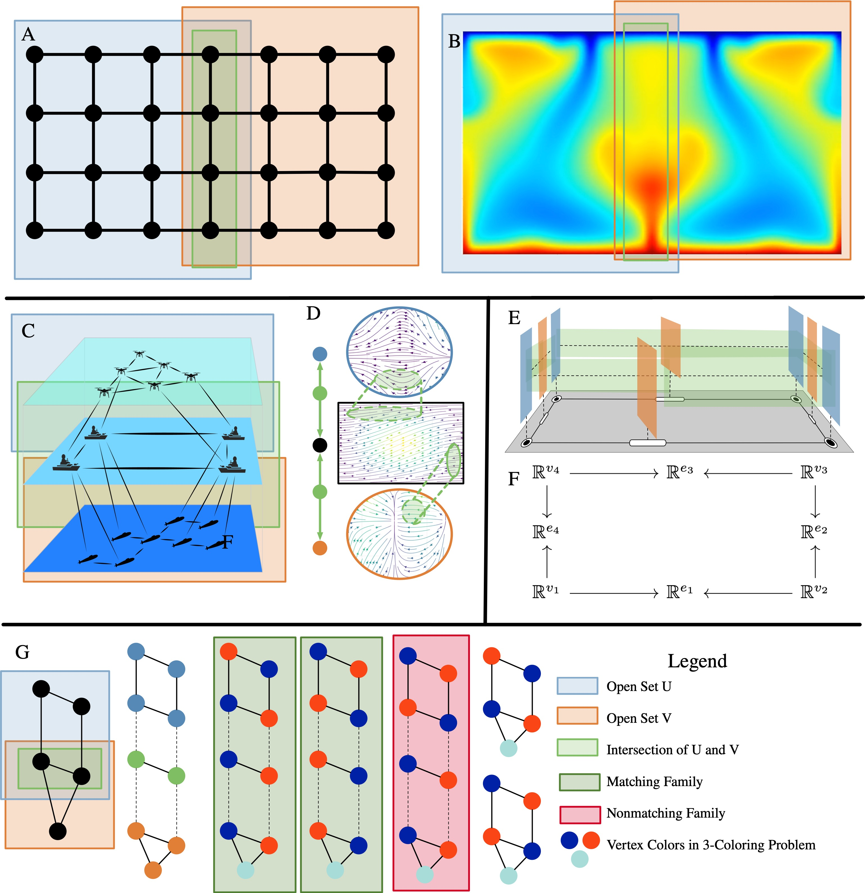
6
PART ONE
Model-Aware Scientific Computing
Syntactic Systems That Compile to
Executable Models
WITH
Sophie Libkind
Evan Patterson
Owen Lynch
Kristopher Brown
Benjamin Bumpus
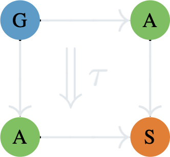
7
Semantics and Solvers Are Functors
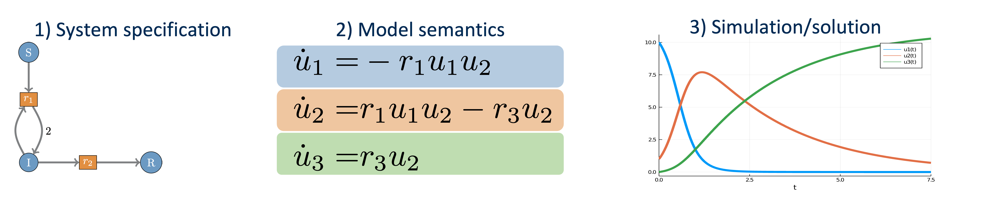
Write the model once as structured data. Semantics, solvers, and analyses are functors out of that
specification, so a new domain reuses the machinery instead of starting over.
8
Wiring Diagrams Are Formulas for Systems
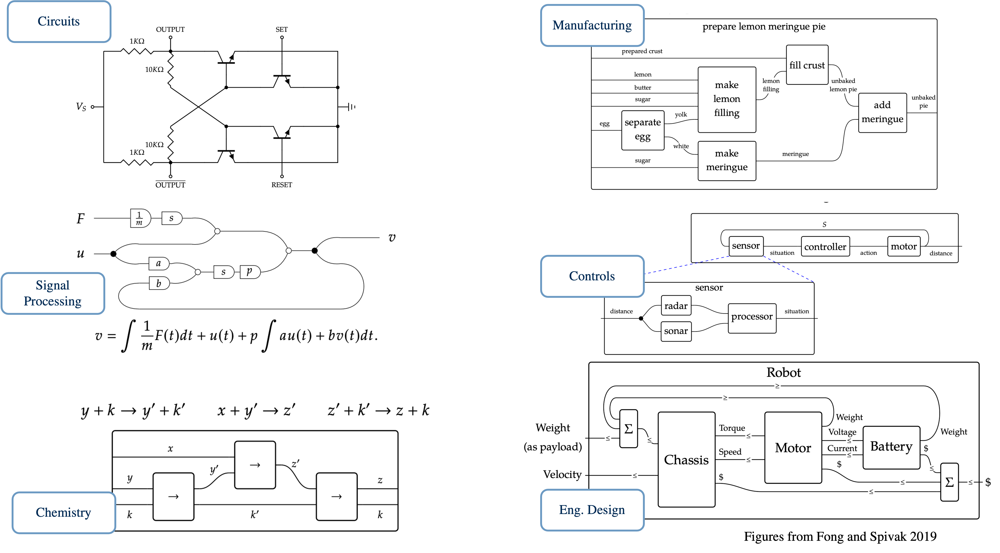
Every one of these fields already draws boxes and wires. Each drawing is a formula that denotes a system.
Give the notation a formal semantics and the drawing becomes executable.
9
One Diagram, Two Semantics
1. Optimization Semantics
Boxes are local objective functions; wires share variable coordinates. Composition yields the sum \(f(x_1,x_2) + g(x_2,x_3)\).
2. Dynamical Semantics
Boxes are vector fields; wires couple state coordinates. Composition superposes forces on the shared variable \(x_2\).
Functorial Translation: Gradient flow maps composite optimization directly into composite dynamics.
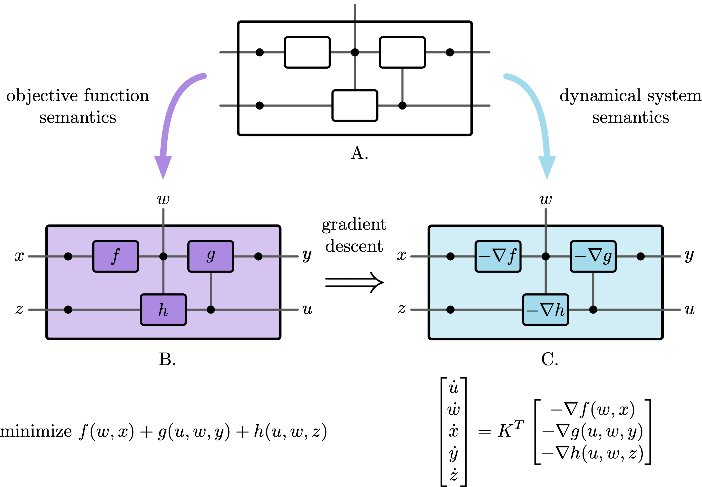
10
Composing Optimization Problems
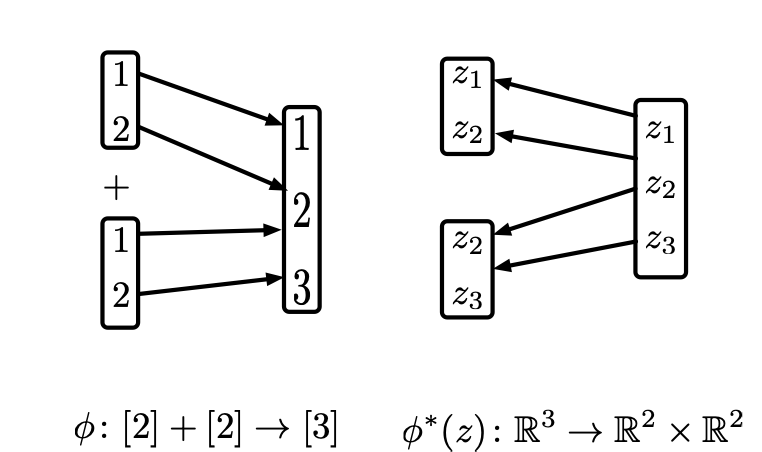
Share data by copying it. Compose objectives by adding them.
\[ f(x) \;=\; \mathbf{1}^{\top}\Big({\textstyle\bigoplus_i} f_i\Big)(Px) \;=\; {\textstyle\sum_i} f_i(P_i x) \]
\(P\) copies shared variables to the boxes that use them; \(\bigoplus\) runs them independently; \(\mathbf{1}^{\top}\) adds the results.
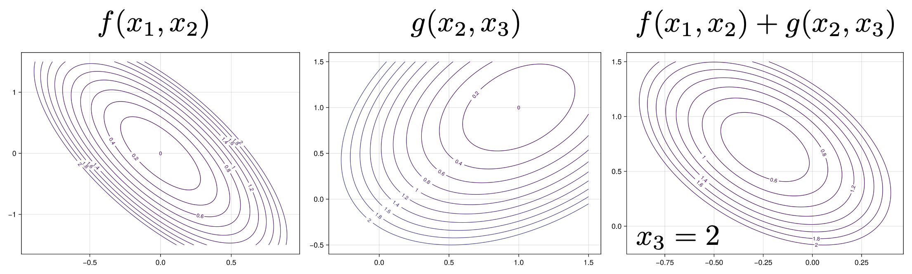
11
Composing Vector Fields
Share state by copying it. Compose vector fields by adding them.
\[ \dot{x} \;=\; P^{\top}\Big({\textstyle\bigoplus_i} v_i\Big)(Px) \]
Copy the shared state to each box, run the local fields independently, sum the contributions back.
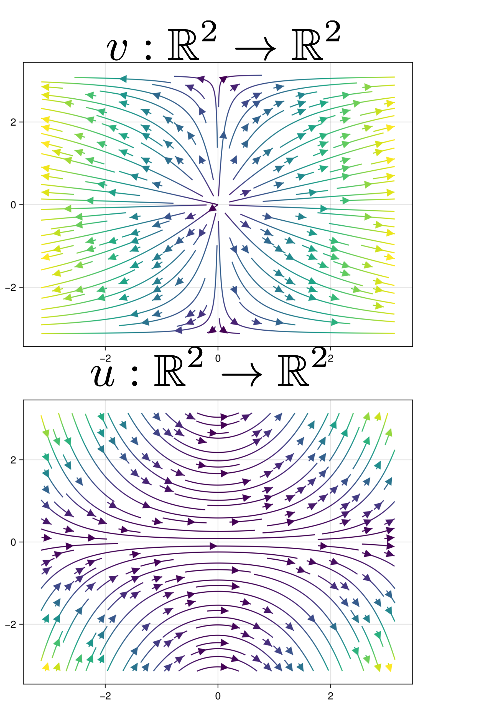
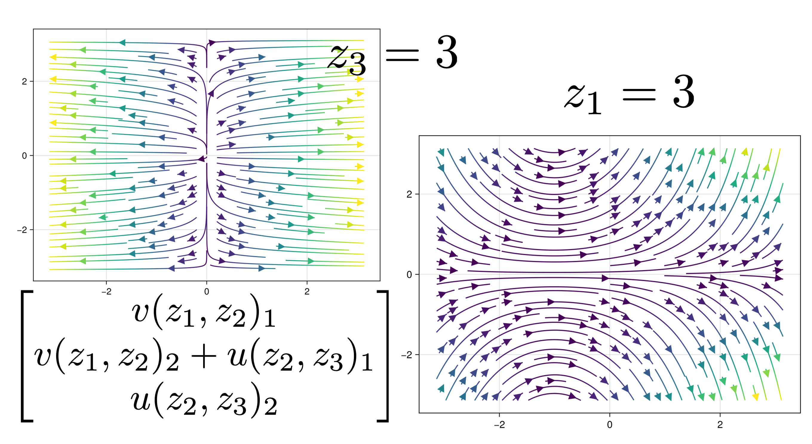
Same diagram, different semantics. The composition rule comes from the diagram, not from the fields.
12
Euler's Method Is Functorial
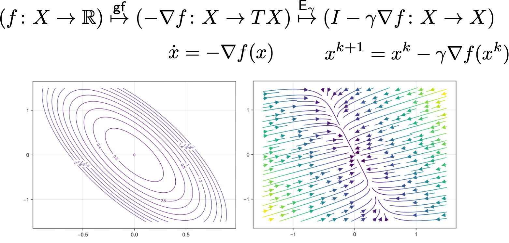
Theorem (Functorial Discretization).
Gradient flow \(\mathcal{G}\colon \mathbf{Opt} \to \mathbf{DynSys}\) and Euler integration \(\mathcal{E}_h\colon \mathbf{DynSys} \to \mathbf{DiscreteDynSys}\) are monoidal functors:
\[\mathcal{E}_h(\mathcal{G}(f \oplus g)) = \mathcal{E}_h(\mathcal{G}(f)) \oplus \mathcal{E}_h(\mathcal{G}(g))\]
Discretizing a composite problem equals composing the discrete solvers. Modular verification is exact.
13
PART TWO
Computational Physics
Directly Simulating Multiphysics
Systems
from Hierarchical Specifications
WITH
Luke Morris
Evan Patterson
George Rauta
Matthew Cuffaro
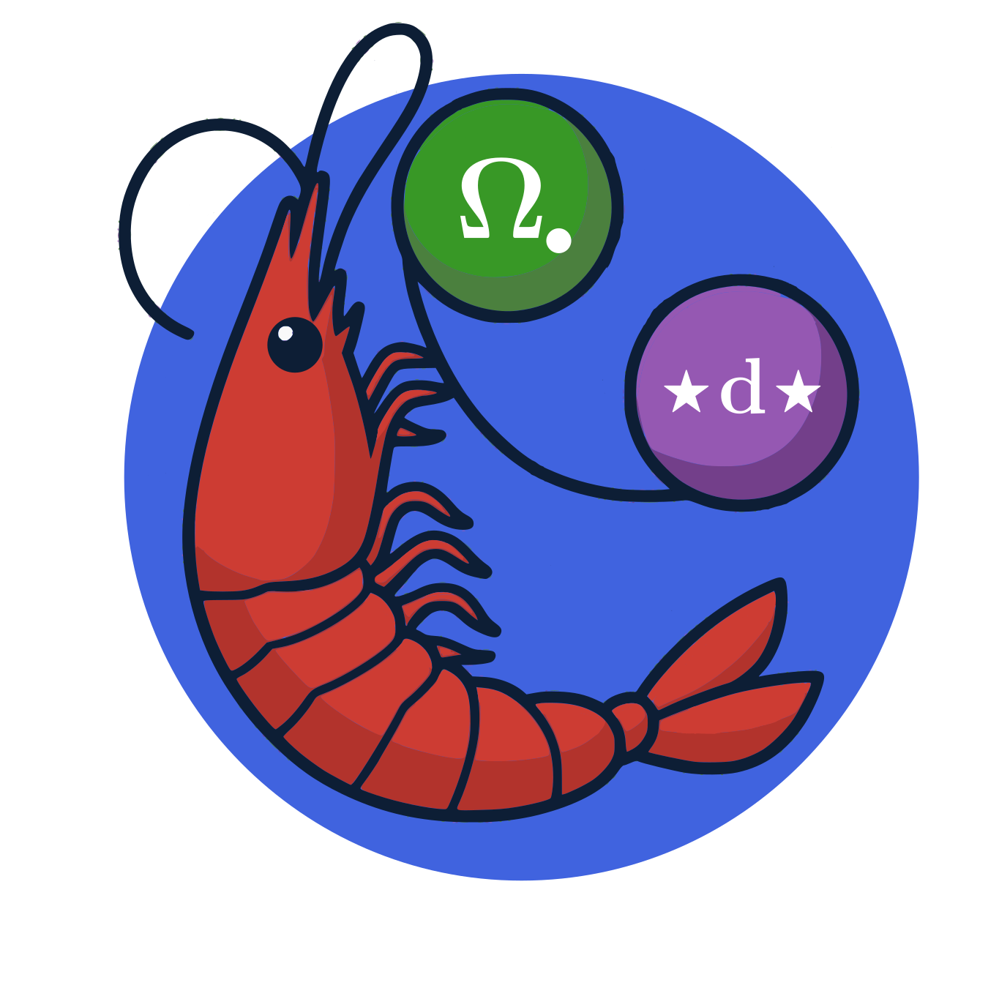
14
Encoding Equations as Diagrams
- ●Vertices carry a variable and the space it lives in
- ●Edges carry the differential operators
- ●A physical theory becomes a labelled graph, and a graph is something a program can read
The same content, in a form that supports type checking, rewriting, and composition.
15
Building Multiphysics with Wiring Diagrams
1. Physical Principles (Decapodes)
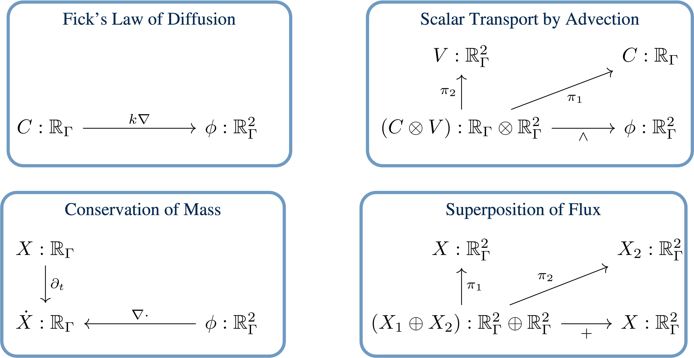
2. Composition Syntax (Wiring Diagram)
Wiring Diagram Semantics
Junctions: Shared variable domains (e.g. ambient space)
Boxes: Physical sub-theories (diffusion, advection)
Wires: Equality constraints on shared ports
Outer Ports: Interface to next level of hierarchy
3. Composed Multiphysics Model
16
Writing and Composing Decapodes in Julia
Diffusion = @decapode begin
(C, Ċ)::Form0
ϕ::Form1
ϕ == k * d(C)
Ċ == ⋆(d(⋆(ϕ)))
∂ₜ(C) == Ċ
end
DiffusionAdvection = @relation (C, V) begin
diffusion(C, ϕ₁)
advection(C, V, ϕ₂)
superposition(ϕ₁, ϕ₂, ϕ, C)
end
sim = evalsim(apex(oapply(DiffusionAdvection, physics)))
f = sim(mesh, generate)
(C, Ċ)::Form0
declares which differential
forms the variables are
d, ⋆
exterior derivative and Hodge
star, not finite differences
@relation
the wiring diagram, written
as text
evalsim
generates the simulator from
the composite
The macro is the syntax; the diagram is what it denotes.
17
From Advection–Diffusion to Porous Media Convection
Porous_Convection = @decapode begin
(λ_ρ₀Cp, αρ₀, k_ηf, ϕ)::Constant
(P, T, Adv, bound_T, bound_Ṫ)::Form0
(g, qD)::Form1
bound_T == adiabatic(T)
# Darcy flux
ρ == g ∧ (αρ₀ * bound_T)
P == Δ⁻¹(δ(ρ))
qD == -k_ηf * (d(P) - ρ)
Adv == ⋆(interpolate(∧ᵈᵖ₁₁(⋆(d(bound_T)), qD)))
Ṫ == -1/ϕ * Adv + λ_ρ₀Cp * Δ(bound_T)
bound_Ṫ == tb_bc(Ṫ)
∂ₜ(T) == bound_Ṫ
end
Real multiphysics fits on one screen, and the compiler checks it.
18
Verified Against the Literature, at Scale
Kelvin–Helmholtz Instability
Rayleigh–Taylor in 3D
Rising Thermal Bubble
Verification Portfolio: Also verified against porous convection, Cahn–Hilliard on GPU, and multigrid convergence on generic subdivision.
19
Lid-Driven Cavity Flow, Against a Benchmark
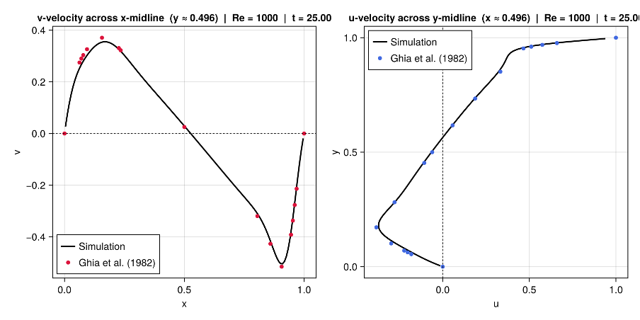
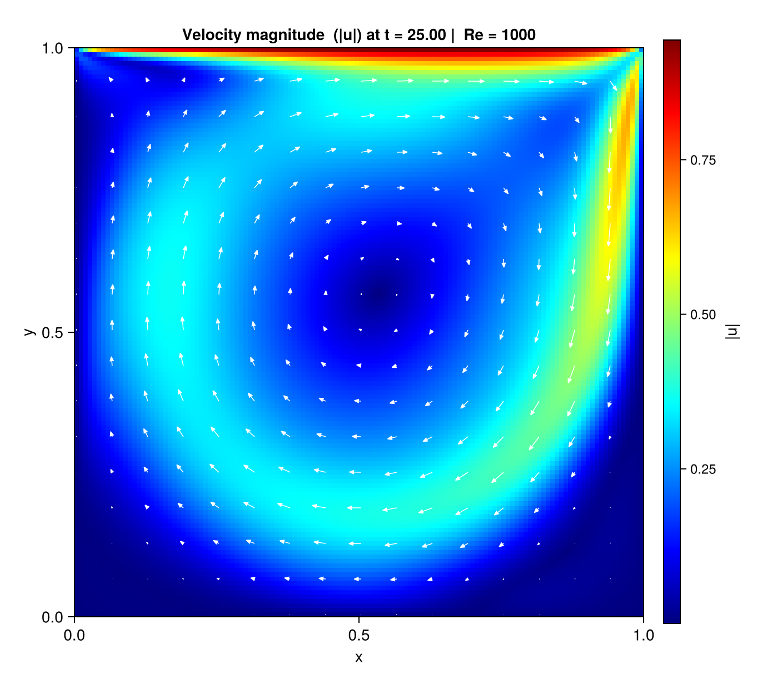
- ●The generated simulator lands on the benchmark points across both midlines, and recovers the primary vortex with its corner recirculations
- ●Quantitative agreement, from a specification with no hand-written discretization
20
PART THREE
Control and Autonomy
Sheaves as the Bridge from Diagrams
to Real Robots
WITH
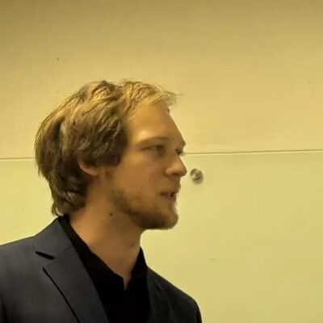
Tyler Hanks
Joana Bou Barcelo
Wilmer Leal

Itay Kadosh

Hans Riess
Matthew Hale

Warren Dixon
21
One Framework, Three Problems
Optimization
Local objectives glued along shared variables, solved by ADMM or proximal gradient.
Predictive Control
Use reference tracking cost and dynamic constraints over a horizon to do MPC.
Coordination
Minimizing Dirichlet energy of a cellular sheaf drives agents to aligned behavior.
22
Hierarchy Is Specified, Not Hard-Coded
The fleet is a tree of nested @system blocks:
two wings, each built from the same reusable fragments, joined by a relay.
fleet = @nested_system begin
@system wingA begin
flight1 = flight(elemsA, :r1)
charlie = escort(4, 0.6, :t3)
r2 = relay()
@link project(flight1, 1) => r2
@link r2 => centroid(charlie)
end
@system wingB begin
delta = escort(5, 0.7, :t4)
echo = escort(5, 0.7, :t5)
r3 = relay()
end
r4 = relay()
@link project(wingA, 1) => r4
@link r4 => project(wingB, 1)
end

A four-level fleet — root → wing → flight → escort team — compiled from this DSL. CellularSheaves.jl,
AlgebraicJulia.
The spec records the hierarchy; the solver exploits it.
23
Sheaf Theory Studies Local-to-Global Phenomena
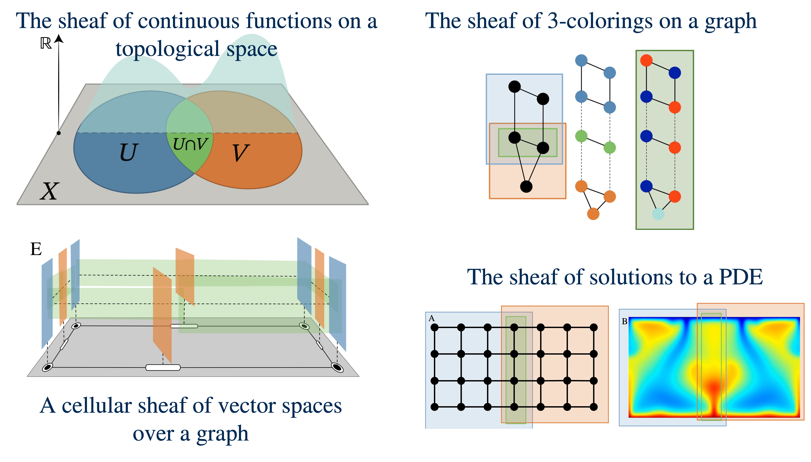
In every case: data attached locally, agreement conditions where the pieces overlap, and a question about
what glues.
24
Graph-Laplacian Control, and Its Assumptions
Agents are nodes, sensing or communication links are edges. Each agent compares its state with its
neighbors', and local disagreement drives the network toward a global objective.
- ●Compatible state spaces across every agent
- ●A measurement each pair of neighbors can compare directly
- ●Two planar robots comparing positions in the same frame
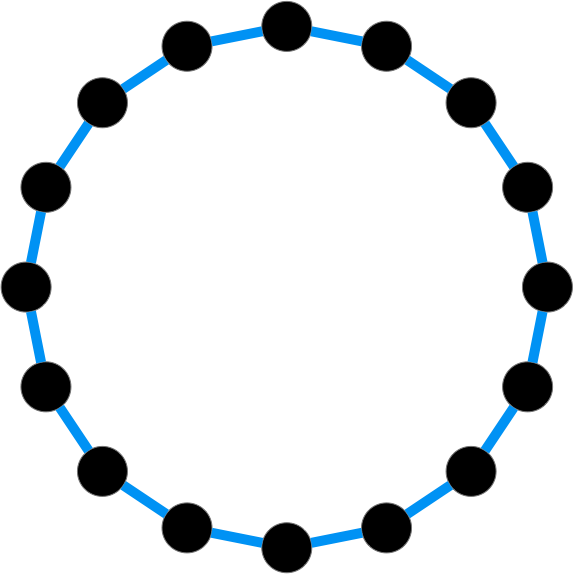

Natural for consensus, formation control, and leader–follower tracking — as long as the states are
comparable.
25
Real Systems Are Heterogeneous
- ●Agents and targets need not live in the same dimension
- ●Only partial or projected measurements may be available
- ●Sensing models differ across a fleet
- ●The graph records who talks to whom, and nothing about what they can compare

26
Cellular Sheaves Over Graphs
Definition (Cellular Sheaf)
A cellular sheaf \(\mathcal{F}\) over a graph \(G = (V, E)\) consists of:
- A vertex stalk (vector space) \(\mathcal{F}(v)\) for each vertex \(v \in V\)
- An edge stalk (vector space) \(\mathcal{F}(e)\) for each edge \(e \in E\)
- A linear restriction map \(\mathcal{F}_{v \unlhd e}\colon \mathcal{F}(v) \to \mathcal{F}(e)\) for each incident pair \(v \unlhd e\)

27
Incidence Matrix vs Exterior Derivative
Graph
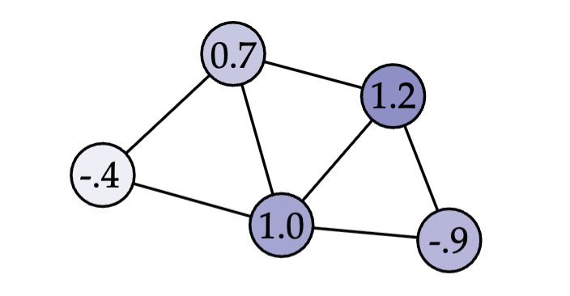
Incidence Matrix: One
Signed Scalar per Incidence
\[ \delta = \left[\begin{array}{cccccc} & v_1 & v_2 & v_3 & v_4 & v_5 \\ e_1 & -1 & 1 & & & \\ e_2 & &
-1 & 1 & & \\ e_3 & 1 & & -1 & & \\ e_4 & -1 & & & 1 & \\ e_5 & & & -1 & 1 & \\ e_6 & & & -1 & & 1 \\
e_7 & & & & -1 & 1 \end{array}\right] \]
Sheaf
Exterior Derivative: A
Block of Restriction Maps per Incidence
\[ \delta = \left[\begin{array}{cccccc} & v_1 & v_2 & v_3 & v_4 & v_5 \\ e_1 & -F_{1 \lhd 12} & F_{2
\lhd 12} & & & \\ e_2 & & -F_{2 \lhd 23} & F_{3 \lhd 23} & & \\ e_3 & -F_{1 \lhd 13} & & F_{3 \lhd 13} &
& \\ e_4 & -F_{1 \lhd 14} & & & F_{4 \lhd 14} & \\ e_5 & & & -F_{3 \lhd 34} & F_{4 \lhd 34} & \\ e_6 & &
& -F_{3 \lhd 35} & & F_{5 \lhd 35} \\ e_7 & & & & -F_{4 \lhd 45} & F_{5 \lhd 45} \end{array}\right] \]
Both Laplacians are δTδ;
the graph is the sheaf whose restriction maps are all 1.
28
Three Agents Tracking One Target
Every agent stalk is ℝ², every edge stalk ℝ: each edge compares the target against the line its agent moves
along. This is the sheaf behind a Robotarium demo.
29
Sheaf Laplacians Compute Global Sections
The sheaf Laplacian is \(L_\mathcal{F} \triangleq \delta^\top \delta\) where \((\delta \mathbf{x})_{ij} \triangleq \mathcal{F}_{i \unlhd ij} x_i - \mathcal{F}_{j \unlhd ij} x_j\)
Graph Laplacian:
\[ (L_G \mathbf{x})_i = \sum_{j \in N_i} (x_i - x_j) \]
Sheaf Laplacian:
\[ (L_\mathcal{F} \mathbf{x})_i = \sum_{j \in N_i} \mathcal{F}_{i \unlhd ij}^\top \left( \mathcal{F}_{i \unlhd ij}(x_i) - \mathcal{F}_{j \unlhd ij}(x_j) \right) \]
Proposition (Global Sections as Kernel).
The space of global sections satisfies \(\Gamma(G; \mathcal{F}) \triangleq \ker \delta = \ker L_\mathcal{F}\).
Theorem (Sheaf Diffusion Convergence).
Sheaf diffusion \(\dot{\mathbf{x}} = -L_\mathcal{F} \mathbf{x}\) converges to the orthogonal projection of \(\mathbf{x}(0)\) onto \(\Gamma(G; \mathcal{F})\) [2].
The operator that drives consensus on a graph has an exact analogue for heterogeneous agents, and its kernel
is the space of global sections.
30
Coordination Sheaves
A coordination sheaf provides a precise dictionary between geometry and control objectives.
Definition (Coordination Sheaf).
A coordination sheaf on a graph \(G=(V,E)\) is a cellular sheaf \(\mathcal{F}\) over \(G\) together with differentiable potential functions \(U_{ij}\colon \mathcal{F}(ij)\to \mathbb{R}\) for each edge \(ij \in E\).
MAS Interpretations for Coordination Sheaves
| Sheaf Concept | MAS Interpretation |
|---|---|
| Graph \(G\) | Bidirectional communication topology |
| Vertex stalk \(\mathcal{F}(i)\) | State space of agent \(i\) |
| 0-cochains \(C^0(G;\mathcal{F})\) | Global state space |
| Edge stalk \(\mathcal{F}(ij)\) | Communication space between \(i\) and \(j\) |
| Restriction map \(\mathcal{F}_{i \unlhd ij}\) | Registers state between agents |
| Potential \(U_{ij}\) | Coordination goal between \(i\) and \(j\) |
31
Beyond Consensus: Edge Potentials
Minimizing the potential over an edge corresponds to satisfying a coordination goal between the agents incident to that edge.
\[ U(x) = \sum_{e \in E} U_e\big( (\delta x)_e \big) \]
Let \(y \coloneqq \mathcal{F}_{i \unlhd ij} x_i - \mathcal{F}_{j \unlhd ij} x_j\) be the edge disagreement between neighbors.
Potential Functions and Coordination Goals
| Potential Function | Coordination Goal |
|---|---|
| \(\frac{1}{2}\|y\|_2^2\) | Consensus |
| \(y^\top A y\) | Matrix-weighted consensus |
| \(-\frac{1}{2}\|y\|_2^2\) | Dissensus |
| \(\frac{1}{2}\|y - b\|_2^2\) | Reach displacement of \(b\) |
| \((\|y\|_2^2 - r^2)^2\) | Reach distance of \(r\) |
Choosing the edge potential chooses the coordination behavior of the fleet.
32
Homological Programs and Their Guarantees
Definition (Nonlinear Homological Program).
Data \( \mathsf{P} = (V, E, \mathcal{F}, \{f_i\}, \{U_e\}) \) with graph \(G\), sheaf \(\mathcal{F}\), objectives \(\{f_i\}\), and potentials \(\{U_e\}\):
\[ \begin{aligned} \underset{\mathbf{x} \in C^0(G;\mathcal{F})}{\text{minimize}} \quad & \sum_{i \in V} f_i(x_i) \\ \text{subject to} \quad & L_\mathcal{F}^{\nabla U} \mathbf{x} = 0 \end{aligned} \]
Theorem (Convexity & Tractability).
If each edge potential \(U_e\) is differentiable and convex, and each agent objective \(f_i\) is convex, then \(\mathsf{P}\) is a convex optimization problem.
Theorem (Decentralized ADMM Convergence).
For convex \(\mathsf{P}\) with quadratic potentials and a Lagrangian saddle point:
- Residual convergence: \(\mathbf{x}^k - \mathbf{z}^k \to 0\)
- Objective convergence: \(\sum_i f_i(x_i^k) + \chi_\mathcal{C}(\mathbf{z}^k) \to p^\star\)
- Dual variable convergence: \(\mathbf{y}^k \to \mathbf{y}^\star\) (dual optimal point)
Theorem (Nonlinear Sheaf Diffusion).
For single-integrator dynamics \( \dot{\mathbf{x}} = \mathbf{u} = -L_\mathcal{F}^{\nabla U}\mathbf{x} \) with strongly convex edge potentials, trajectories converge exponentially to \( \arg\min_{\mathbf{x} \in C^0(G;\mathcal{F})} U(\delta_\mathcal{F}\mathbf{x}) \).
Local gradient flow on the sheaf potential computes the global coordination state with provable convergence.
33
Harmonic Extension as Control Objective
Finding a Global Section
\[ \mathcal{L}_{\mathcal{F}} \begin{bmatrix} q \\ p \end{bmatrix} = \begin{bmatrix} \mathcal{H} & -\mathcal{B} \\ -\mathcal{B}^\top & \mathcal{L}_P \end{bmatrix} \begin{bmatrix} q \\ p \end{bmatrix} = 0 \]
Harmonic Extension
\[ \mathcal{H} q = \mathcal{B} p \quad \Longrightarrow \quad q^\star = \mathcal{H}^{-1}\mathcal{B} p \]
What the Blocks Mean
\( \mathcal{H} = \mathcal{L}_Q + D \) total agent interaction map
\( \mathcal{B} \) agent–target sensing map
\( \eta = \mathcal{H}q - \mathcal{B}p \) agent disagreement relative to targets
Standing
Assumption (Control Authority). Target dynamics \( \dot{p} = f_p(p, t) \) induce motion on
the harmonic extension \( \dot{q}^\star =
\mathcal{H}^{-1}\mathcal{B}\dot{p} \). Agents must have sufficient control authority to keep up
with the changing \( q^\star(t) \).
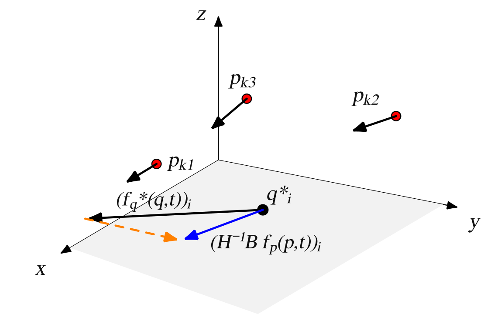
The harmonic extension \( q^\star(t) \) is the
dynamic target reference that agent feedback tracks.
34
Sheaf-Laplacian Feedback and Its Guarantee
Local Sheaf Disagreement
\[ \eta_i = \sum_{j \in \mathcal{N}_i} \mathcal{F}_{i \unlhd ij}^{\top}\big( \mathcal{F}_{i \unlhd ij} q_i - \mathcal{F}_{j \unlhd ij} x_j \big) \]
Decentralized Controller
\[ u_i = -k_1\, g_i^{+} \eta_i \]
Control Gain
\( k_1 > 0 \) — a larger gain shrinks the residual tracking error.
Input Map
\( g_i^{+} \) — maps the correction into agent \( i \)'s control space.
Theorem
(Semi-global exponential convergence). Under the standing
assumptions, the tracking error relative to the harmonic extension converges semi-globally uniformly
exponentially to a bounded residual set. A larger gain \( k_1 \) shrinks the residual error arbitrarily.
Residual errors arise solely from dynamics
mismatches and bounded disturbances, exactly matching classical singular perturbation bounds.
Each agent evaluates \( u_i \) solely from neighbour measurements — no global state, no
central coordinator.
The ordinary Lyapunov argument for Laplacian feedback, run in the sheaf’s coordinates.
35
Who Can Track Whom Is a Cohomological Question
Ships Tracking Submarines —
Determined
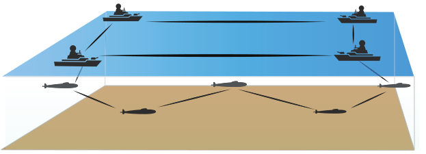
Quadcopters Tracking Ships
— Underdetermined
A
ship is stuck on the surface, so the target’s three coordinates determine its two. The harmonic extension is
unique and the relative cohomology vanishes.
A quadcopter also has an altitude, which nothing it measures about a surface vessel constrains. That spare
degree of freedom is the non-vanishing relative cohomology.
Trackability is whether the measurements pin down every degree of freedom the agents have. The cohomology
counts the ones they miss.
36
Stability–Trackability Duality
Stability
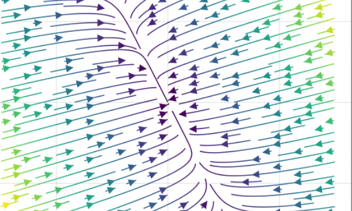
Harmonic extension
Trackability
No agent sees the whole state; together
they leave nothing unconstrained.
- ●Relative cohomology turns both questions, one analytic and one geometric, into linear algebra on the agent and target subgraphs, answerable by an algorithm rather than by hand
- ●A control property and a sensing property are the same invariant
37
Thirteen Agents, Four Targets, Two Domains
- ●Thirteen planar agents with nonlinear dynamics
- ●Four underwater targets in a tetrahedron formation on figure-eight paths
- ●Restriction maps project three-dimensional target states into the plane
- ●Decentralized control under external disturbances
Each cluster senses one submerged target; dashed links carry agent-to-agent and target-to-target
communication.
Surface vehicles track their targets through a projection they can measure; the restriction maps carry the
dimension change.
38
The Agents Reach and Hold the Formation
Formations, in the Plane
Agent and Target Trajectories
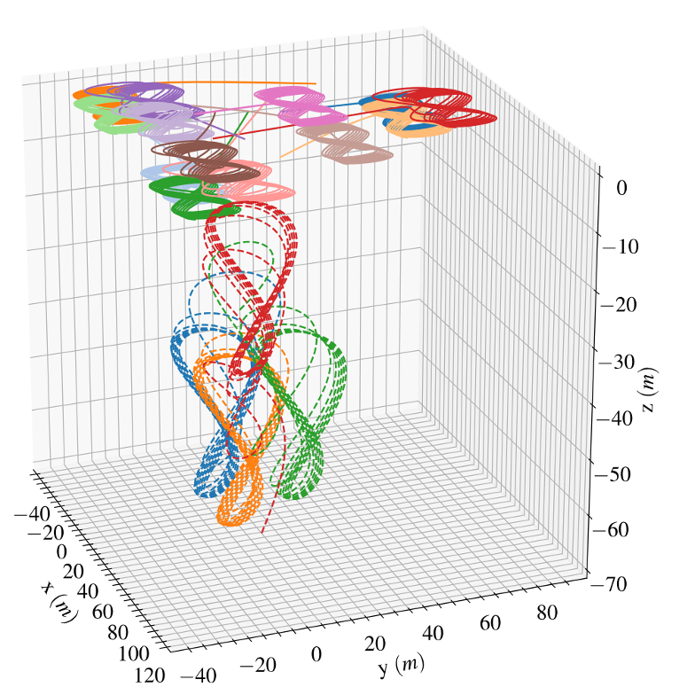
Tracking Error by Gain
A larger gain shrinks the residual error, exactly matching the convergence bound.
Agents converge from arbitrary initial positions into the square and triangle formations, and hold them as
the targets move.
39
PART FOUR
Toward Compositional Digital Engineering
Carrying the Framework to Hardware and Learning
40
Layered Control Architecture
1. Harmonic Reference & Velocity Solves (Sheaf)
Computes harmonic position \(H q^*(t) = -L_{AB} p(t)\) and velocity \(H \dot{q}^*(t) = -L_{AB} \dot{p}(t)\) via distributed multifrontal tree solve.
2. Joint Tikhonov Filtering (Boundary Layer)
On-board filter \(\epsilon \dot{x}_{\text{ref}} = -x_{\text{ref}} + q^*(t)\), \(\epsilon \dot{v}_{\text{ref}} = -v_{\text{ref}} + \dot{q}^*(t)\) smooths discrete communication updates.
3. Feedforward + Feedback Control Law
\(u = -K(x - x_{\text{ref}}) + B^\dagger (v_{\text{ref}} - A_c x)\). Feedforward eliminates dynamic escort tracking lag while preserving input-to-state stability.

Topological coordination at the fleet scale, feedforward tracking at the vehicle scale.
41
Learning Helps, and Resists Certification
Homogeneous Formation
Heterogeneous Swarm
Learned policies raise performance, and certifying their stability and safety is the hard part. Next:
distributed RL techniques inside the sheaf, where the guarantees already live.
42
From Theorem to Hardware
Next: the same sheaf and the same feedback law on physical differential-drive robots, using the Robotarium
at Georgia Tech.
- ●Eight-agent wheel and star sheaves under wind drift
- ●Mixed drone and ground-vehicle teams with a three-to-two dimensional projection
- ●Next: integration with reinforcement learning for unknown agent dynamics
In progress with the Robotarium team and Matt Hale’s lab. Targeting CDC 2027.
43
Conclusion
Write the system as structured data; the analysis is a functor out of it.
Diagrams Denote Systems
Specifications Compile to Solvers
Sheaves Close the Loop
44
References
- [1]B. Fong and D. I. Spivak. An Invitation to Applied Category Theory: Seven Sketches in Compositionality. Cambridge University Press, 2019.
- [2]J. Hansen and R. Ghrist. Toward a spectral theory of cellular sheaves. Journal of Applied and Computational Topology, 3(4):315–358, 2019.
- [3]J. Hansen and R. Ghrist. Distributed optimization with sheaf homological constraints. Allerton Conference on Communication, Control, and Computing, pp. 565–571, 2019.
- [4]T. Hanks, H. Riess, S. Cohen, T. Gross, M. Hale, and J. Fairbanks. Distributed multi-agent coordination over cellular sheaves. arXiv:2504.02049, 2025.
- [5]T. Hanks, C. F. Nino, J. Bou Barcelo, A. Copeland, W. E. Dixon, and J. Fairbanks. Heterogeneous multi-agent multi-target tracking using cellular sheaves. European Control Conference. arXiv:2512.24886.
- [6]L. Morris, A. Baas, J. Arias, M. Gatlin, E. Patterson, and J. Fairbanks. Decapodes: a diagrammatic tool for representing, composing, and computing spatialized partial differential equations. Journal of Computational Science, 81, 2024.
- [7]E. Patterson, O. Lynch, and J. Fairbanks. Categorical data structures for technical computing. Compositionality, 4(5), 2022.
- [8]U. Ghia, K. N. Ghia, and C. T. Shin. High-Re solutions for incompressible flow using the Navier–Stokes equations and a multigrid method. Journal of Computational Physics, 48(3):387–411, 1982.
- [9]S. Boyd, N. Parikh, E. Chu, B. Peleato, and J. Eckstein. Distributed optimization and statistical learning via the alternating direction method of multipliers. Foundations and Trends in Machine Learning, 3(1), 2011.
- [10]AlgebraicJulia. CellularSheaves.jl, Decapodes.jl, and CombinatorialSpaces.jl. algebraicjulia.github.io
45
BACKUP
Additional Material
Slides Held in Reserve for Questions
46
Beyond Euclidean Gradient Descent
Gradient descent is one functor from optimization problems to dynamical systems. Accelerated methods,
saddle-point flows, and Riemannian descent are others, all landing in the same target.
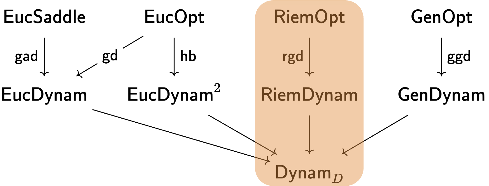
Tyler Hanks built a distributed algorithm for Riemannian optimization on this structure, extending
distributed gradient descent to variables on manifolds.
47
Why Exact Tracking Fails, and What Replaces It
Exact tracking asks the agent assignment to be a global section. An agent linked to two targets in
different states cannot satisfy both edge constraints.
The Canonical Relaxation
Fix targets as boundary values and choose agent states that minimize total disagreement:
\[
x_A^{\star} = \arg\min_{x_A} \; \tfrac12 \big\| \delta \,[\,x_A \, ; \, x_T\,] \big\|^2 \]
Exact consensus is impossible across mismatched domains; the harmonic extension is the canonical, optimal
relaxation.
48
Decapodes: Directly Computable Physics
Discrete exterior calculus supplies the operators; the diagram supplies the equations. The specification
compiles to a simulator with no hand-written discretization.
- ●Specifications are data: type-checked, rewritten, and composed before compilation
- ●Custom operators supply their own matrices against any mesh
- ●Generic subdivision gives geometric multigrid for free
- ●Sparse DEC operators map cleanly onto GPUs
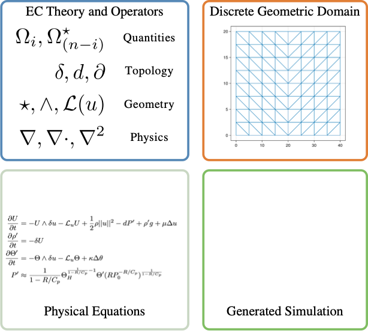
Built on CombinatorialSpaces.jl, part of the AlgebraicJulia ecosystem.
49
The Spectrum of Scientific Computing Technology
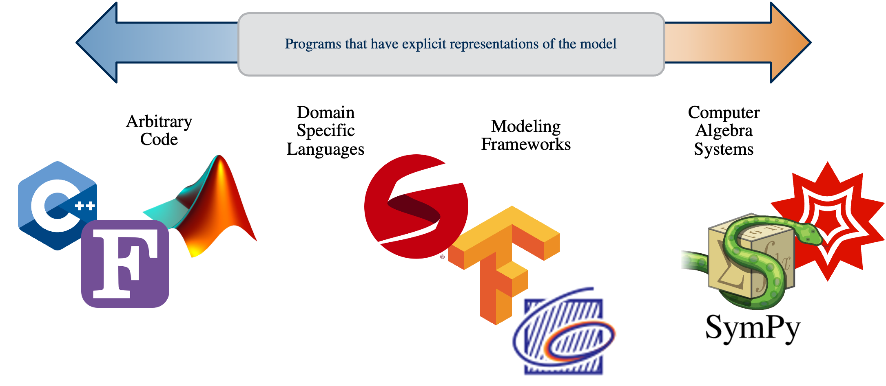
The compositional program moves right on this axis without giving up generality.
50
One Structure, Four Activities
Specifications as structured data, composed along interfaces
Modeling
Solvers generated from the specification, verified against the literature
Simulation
Surrogates and calibration constrained by the model's own structure
Learning
Distributed optimization and control read off the same gluing
Decision
Each is usually a separate tool stack with its own model format. Written compositionally they share one
representation, so a change to the model propagates to the simulator, the surrogate, and the controller.
That shared representation is what digital engineering needs and what scientific AI keeps discovering it is
missing.
51
Scientific AI Needs the Structure
Learning components constrained by the model they sit inside.
Structured Surrogates
Neural operators and basis expansions
parameterized directly over categorical model specifications rather than black-box grids.
Representation
Automated Adjoints
Differentiable calibration and parameter
estimation generated automatically by functorial differentiation through the wiring diagram.
Calibration
Model Selection
Searching spaces of morphisms between
physical theories to discover missing terms and constitutive relations from observed data.
Discovery
Scientific AI does not replace domain physics—it learns the unknown constitutive terms inside the structure.
52
Where This Goes Next
Digital engineering built on models that compose.
Autonomous Mission Synthesis
Compiling verified, multi-domain fleet
controllers directly from high-level mission specifications and spatio-temporal constraints.
Autonomy
Certified Learning-in-the-Loop
Sheaf-theoretic multi-agent reinforcement
learning with provable Lyapunov stability guarantees and Control Barrier Functions on hardware.
Safety & RL
Model-Based Digital Twins
Unifying continuous finite-element
multiphysics, reduced-order models, and live hardware sensor streams in one mathematical graph.
Digital Engineering
AlgebraicJulia Ecosystem
Scaling the open-source community into the
standard national computational infrastructure for compositional science.
Infrastructure
Compositionality turns complex systems engineering into an algebraic, verifiable discipline.
53